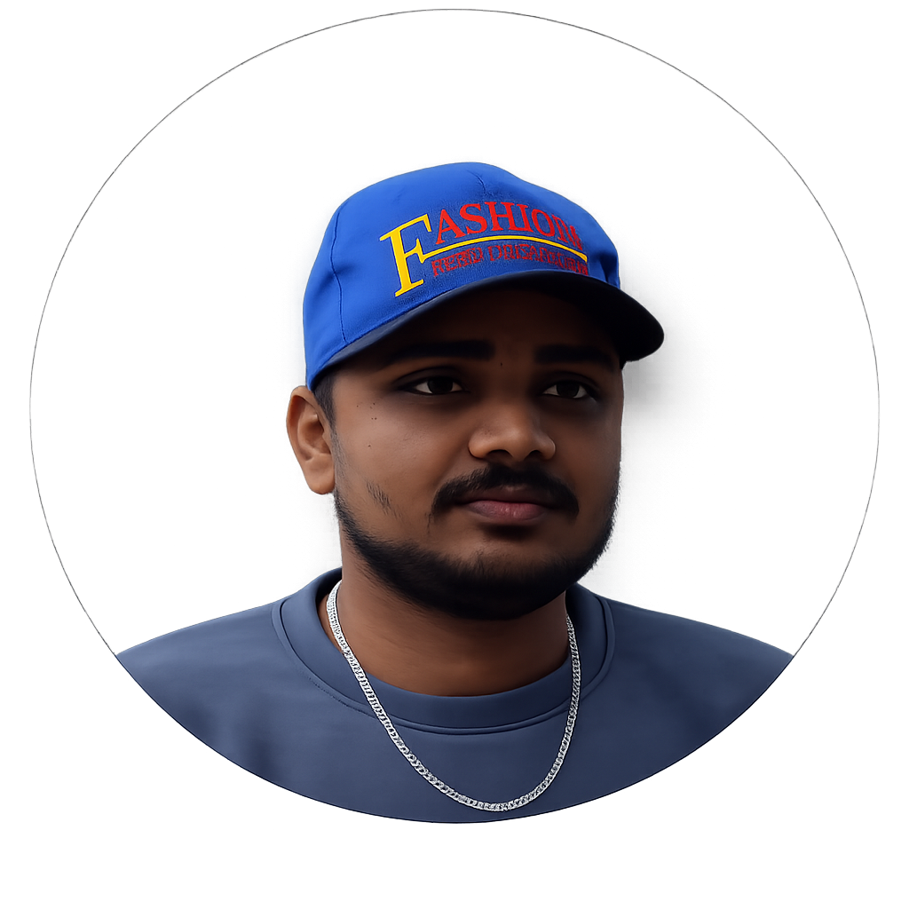

I'm a
A DevOps Engineer specialising in automation, CI/CD pipelines, and multi-cloud architecture. Over the past year I've built hands-on experience turning slow release cycles into reliable, high-velocity deployments — and I'm just getting started.

expertise
The tools and platforms I work with to ship reliable infrastructure.
human side
what I've built
A selection of DevOps and cloud projects — infrastructure, automation, and beyond.
End-to-end CI/CD pipeline for a microservices application using Docker, Jenkins, and AWS ECS. Automated build, test, and deployment with zero-downtime rolling updates.
Provisioned a production-grade AWS environment using Terraform — VPC, subnets, IAM roles, EC2 autoscaling groups, and RDS — all version-controlled and reproducible.
Deployed and managed a multi-node Kubernetes cluster with Helm charts, horizontal pod autoscaling, and namespace-based resource isolation for dev/staging/prod environments.
Built a full monitoring and alerting stack using Prometheus and Grafana. Custom dashboards for CPU, memory, and request metrics with PagerDuty alerting integration.
Automated provisioning and configuration of 20+ servers using Ansible playbooks — package installation, security hardening, user management, and app deployment.
reach out
Open to collabs, opportunities, and conversations about DevOps & Cloud.